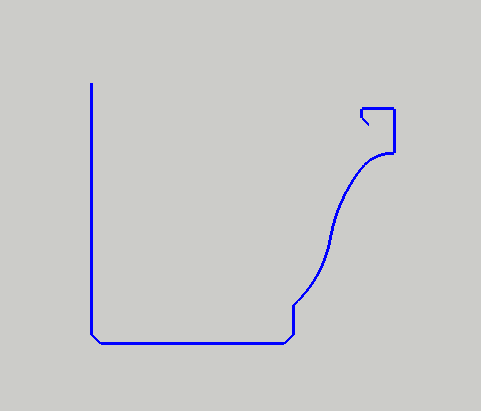
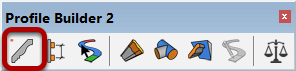
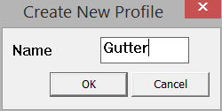
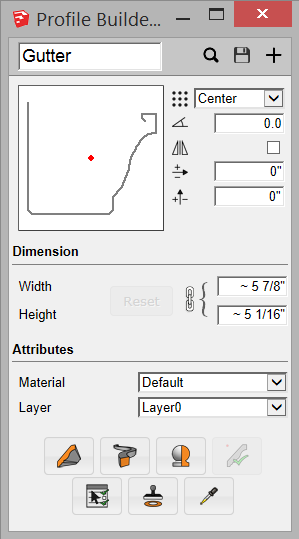

1. Draw a series of connected lines. The lines must all be located on the XY plane.
2. Select the polyline.
Tip: To control the orientation of the extruded faces, use the Smart-Path Select Tool to select the polyline.


1. Type the name of the Profile and Click OK
2. All profiles must be given a name.
